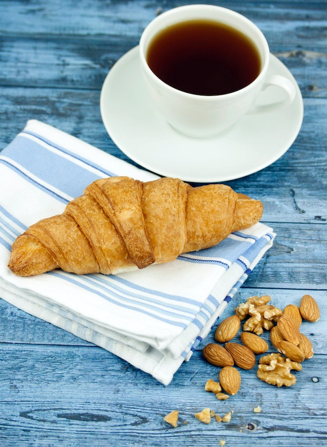

France
France has always been my favorite location for trying different tastes. Eating croissants in the breakfast and later on for different times of the day as snacks is one of my journey traditions. Afterwards, having a meal with meat and wine also enriches my daily routine. Lastly, there are always one new way to discover new dish, such as a different ratatouille alternatives or bouillabaisse for fish lovers.

France Flag (Image from CIA World Factbook)

Croissant and Coffee (Image from Pexels)